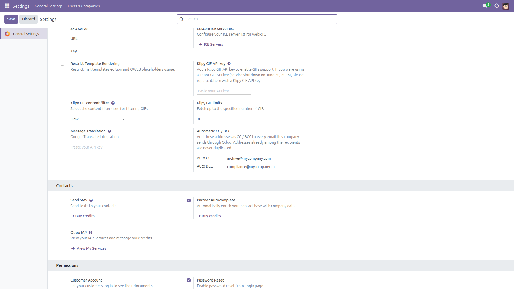
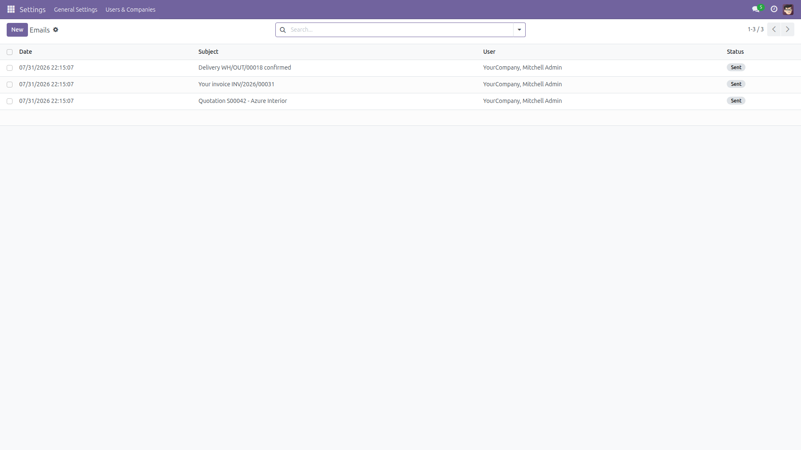

A silent copy of every email Odoo sends — archive, compliance, shared mailbox.
Many companies must keep a copy of every email that leaves the system: a compliance archive, a shared "sent" mailbox, a CRM auto-logger. Odoo has no built-in way to do that. This module adds two fields to General Settings — Auto CC and Auto BCC — and every email sent through Odoo's outgoing mail queue is delivered with those addresses added.
Treat the copy mailbox as privileged. The Auto CC / BCC addresses receive a copy of your company's outgoing mail — quotations, invoices, private chatter replies. Only point them at mailboxes with appropriately restricted access.

General Settings — the Automatic CC / BCC section with per-company address lists.

Every email processed by the outgoing queue is delivered with the configured copy.
Questions, issues or ideas? Email f.ashraf.dev1@gmail.com — happy to help.